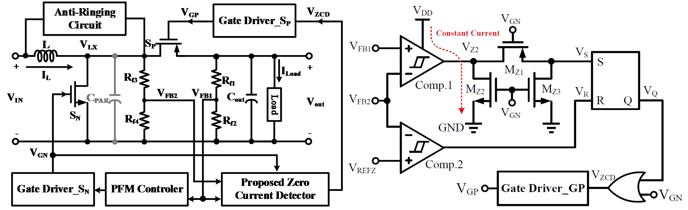
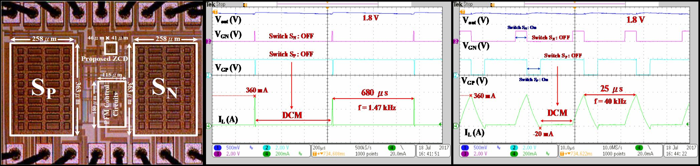
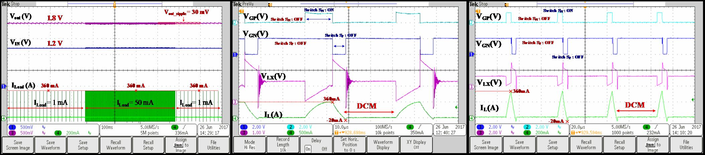
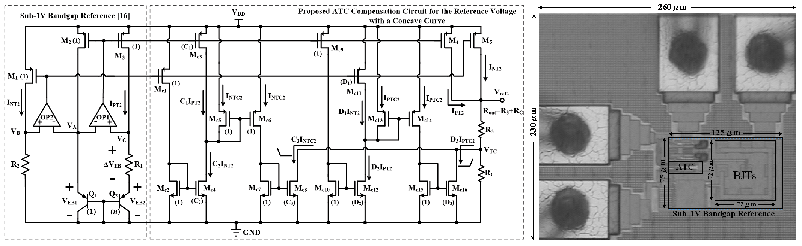
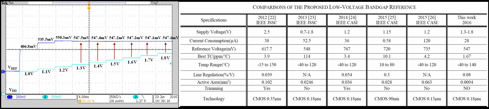

LABORATORY
LAB INTRODUCTION
本實驗室成立旨在培育類比積體電路設計和電源管理晶片設計的人才，目前研究方向著重於低功率積體電路設計、類比積體電路設計和電源管理控制晶片設計。藉由創新電路的研發過程，來養成學生獨立思考和解決問題之能力，並以完整的實體電路設計訓練，來培育具電路分析、電路模擬、電路設計、電路佈局和實作量測等技能的專業人才。
CHIP INTRODUCTION
High-Efficiency PFM Boost Converter with An Accurate Zero Current Detector
IEEE Transactions on Circuits and Systems II: Express Brief
An integrated pulse-frequency modulation boost converter with an accurate zero current detector (ZCD) is presented. The proposed ZCD is used to improve the power efficiency of the boost converter and comprises two hysteresis comparators, the transistors MZ1–MZ3, and a set–reset latch to eliminate the reverse current of the high-side switch in the energy release period. This ZCD can also avoid early or delayed detection and ensure stable operation in the discontinuous conduction mode. Furthermore, a new comparator incorporating an appropriate logic gate is developed to eliminate a constant current during the energy storage period. The proposed boost converter was designed and fabricated using the standard TSMC 0.18-μm 1P6M CMOS technology with a chip area of 0.43 mm2. The experimental results revealed that the maximum power efficiency of 88.39% is achieved at a load current of 50 mA, and the light-load efficiency is enhanced by the proposed ZCD. Furthermore, power efficiency of the boost converter with the proposed ZCD is 28.29% higher than that of the existing ZCD design at a load current of 1 mA.
  A Sub-1ppm/°C Precision Bandgap Reference with Adjusted-Temperature-Curvature Compensation
IEEE Transactions on Circuits and Systems I:Regular Papers
This paper presents a precision bandgap reference with an innovative adjusted-temperature-curvature compensation circuit that obtains a good temperature coefficient (TC) over a wide temperature range. The proposed compensation circuit for enhancing the voltage accuracy of the bandgap reference combines an addition circuit, subtraction circuit, and current mirror to achieve an adjusted piecewise-linear temperature current over an entire temperature range. The proposed bandgap reference was designed and fabricated using a standard TSMC 0.18 μm 1P6M CMOS technology. Measurements on 8 samples indicated that the proposed bandgap reference achieved a TC that varies from 1.67 to 10.55 ppm/°C from –40 °C to 140 °C with a supply voltage of 1.8 V. The measured 547 mV reference voltage achieved a precision line regulation that is less than 0.08 %/V for supply voltages between 1.3 and 1.8 V. The proposed circuit dissipated 28μA with a supply voltage of 1.8 V, and active area of 0.0094 mm2. The circuit was designed to operate on a low supply voltage down to 1.3 V.
 